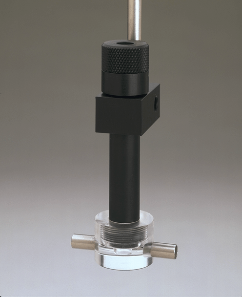

Electrodes and Meters

Dual Channel Oxygen Meter
SI782
Oxygen meter that operates with one or two microcathode oxygen electrodes for precision dissolved oxygen measurement.

Microcathode Oxygen Electrode
SI1302
Clark-type polarographic electrode used with all of our respirometry research products.

Six-Channel Oxygen Meter
SI928
Oxygen meter for precision dissolved oxygen measurement that can operate with up to six microcathode oxygen electrodes simultaneously.
Measurement Cells and Chambers

Electrode Holder
EH100
Electrode holder for use with custom-designed respiration chambers.
Flowcell
FC100
Cell for continuous in-line oxygen monitoring or for connection to a flow-through respirometer chamber.

Microcell Respirometer
MC100
Cell for flow through or spot measurements of PO2 measurement of blood or other fluids.

Mitocell Respirometer
MT200/MT200A
Micro-volume respirometer for researchers measuring oxygen uptake of mitochondrial, enzyme and cell preparations

Multi-Cell Respirometer
RC650
Six-cell respirometer for small volume replicate respiration measurements of oxygen uptake by microbial and cells suspensions, mitochondria or enzyme preparations.

Respiration Cell
RC300/RC350
Cells for small volume measurements of oxygen uptake rate by microbial suspensions, cell suspensions, mitochondria or enzyme preparations.

Respiration Chamber
RC400
Chamber for marine biologists wishing to measure respiration rates of larger aquatic animals including mussels and fry.

Tucker Cell
TC500
Used for measuring oxygen content of blood containing haemoglobin and haemocyanin using the method Tucker (1967)